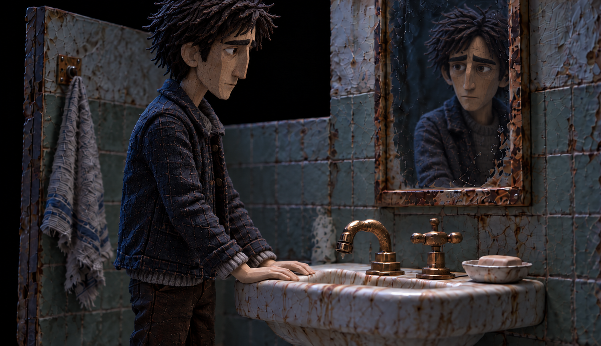
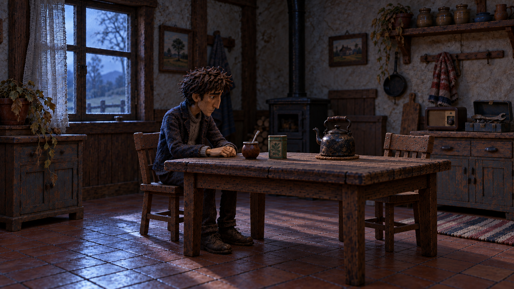
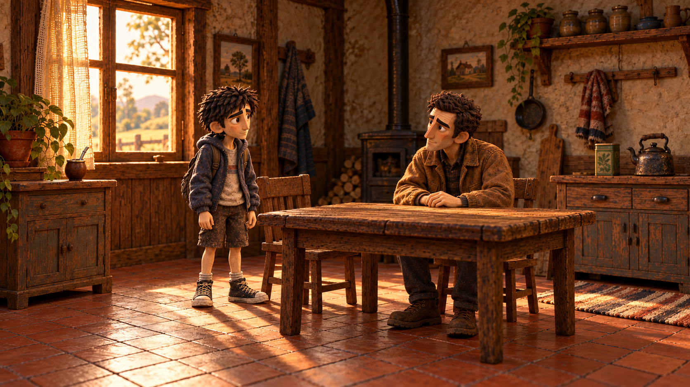
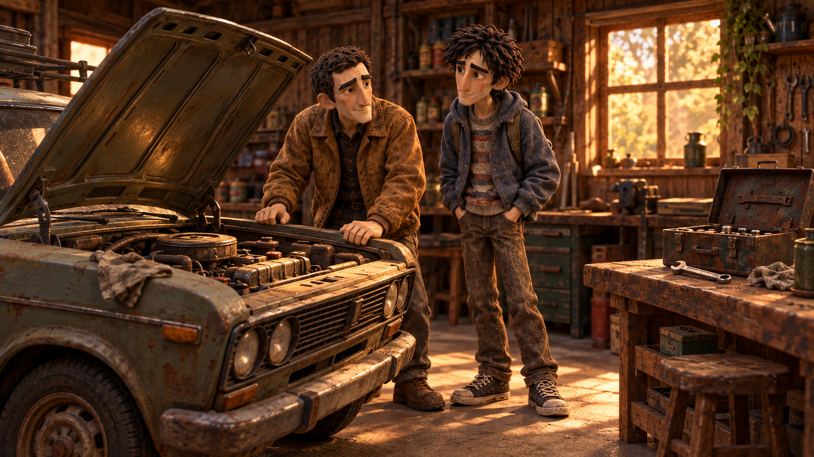
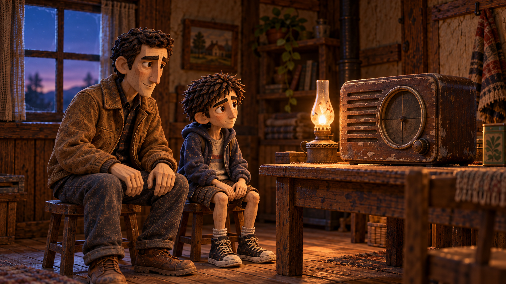

VERSIÓN EN DESARROLLO · 16 OCTUBRE 2026Lo que queda en la Tierra
Los recuerdos de Valentino y el presente que estamos construyendo. Desde acá podés jugar la versión actual y visitar cada tramo por separado.
Abrir el juegoEn el menú, elegí Iniciar para comenzar desde la pesadilla o Continuar para retomar tu partida.
Para ver la historia en orden: recorré la casa y, al llegar a la cocina, explorá el mate, las herramientas y la radio. Después se habilita el cajón con la carta. También podés abrir cada escena por separado abajo.
El presente · tercera persona

Despertar y salir
Dormitorio, pasillo, rutina del baño y acceso a la cocina. Recorrido por clic con guardado, rostro adulto y casa fría y oscura.
Recorrer la casa

El baño
Abrir la canilla con la derecha, lavarse, cerrarla y salir. Baño aislado en negro infinito, con reflejo y acciones continuas.
Jugar desde el menú

La silla vacía
Cocina interactiva con objetos que llevan a los recuerdos. Los tres recuerdos regresan a esta cocina y habilitan la carta.
Explorar la cocina
Los recuerdos

El mate
Buscar los objetos, preparar el mate y compartirlo con papá.
Jugar el mate
El taller
Las herramientas y el trabajo compartido con el padre.
Jugar el taller
La radio
Un nuevo encuentro con papá, ya más viejo.
Jugar la radioEl desenlace
Guardar cuatro objetos, tomar la mochila, subir al auto, respirar y partir. Diálogos y sonidos se pulen en la próxima pasada.
La carta y el mapa · Preparar el viaje · La partida
Las escenas usan el guardado local del juego. Este recorrido muestra el estado real del proyecto; la versión en preparación empieza con la pesadilla y el despertar en la pieza.